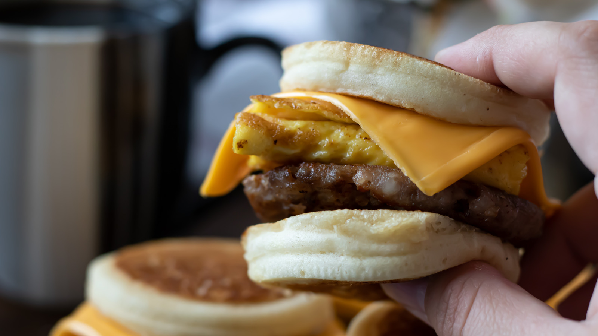

Sausage Egg and Cheese McGriddle

Inspired by McDonald's sausage egg and cheese McGriddle. Easy to make at home
Ingredients
- 2 breakfast sausage patties
- 2 eggs
- 1 piece of American cheese
- 1 English muffin
- 1 tbsp maple syrus
Steps
- Fully cook breakfast sausage patties and set aside.
- Toast English muffin and drip maple syrup over the inside halves.
- Cook eggs in sausage oil and some butter/cooking oil if necessary.
- Lay eggs on toasted muffins, lay cheese over and place patties on top.
- Close sandwich and serve.